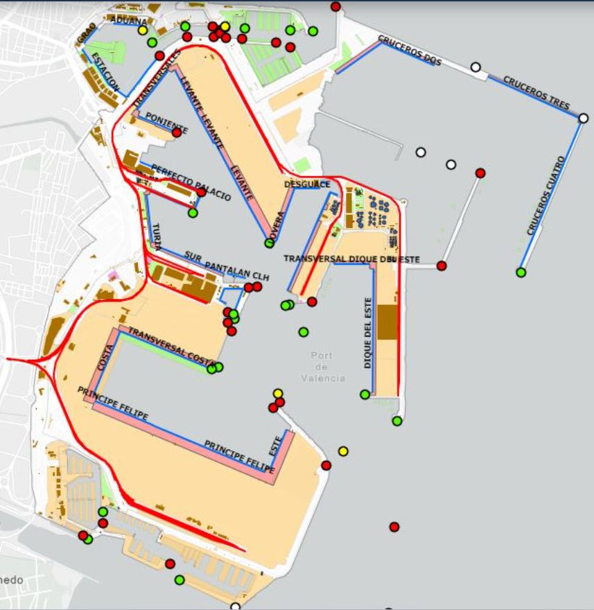

Ubicaciones Destacadas
Zona 1: Acceso Norte, Este Exterior y Servicios
Aduanas 🛂
📍 Oficina de aduanas del Puerto de Valencia.
Muelle Norte ⬆️
📍 Zona de carga y descarga de contenedores y mercancías.
Marina Real Juan Carlos I ⛵
📍 Área recreativa y deportiva, sede de eventos náuticos.
Muelle de Levante (APM Terminals) 🌅
📍 Muelle situado al este, importante para diversas operaciones portuarias y sede de APM Terminals.
Dique del Este ➡️
📍 Estructura de protección y área de atraque en la zona este.
Estación Marítima 🚉
📍 Edificio principal para pasajeros y servicios portuarios.
Puesto Fronterizo 🛂
📍 Punto de control de aduanas y fronteras dentro del puerto.
Amarradores del Puerto de Valencia 🔗
📍 Ubicación de la oficina principal de los servicios de amarre.
Remolcadores del Puerto de Valencia 🛥️
📍 Zona general de operación de los remolcadores del puerto.
GNC Terminal (TEPSA) ⛽
📍 Terminal de Gas Natural Comprimido, operada por TEPSA.
Terminal Grimaldi 🚢
📍 Terminal de carga y pasajeros de Grimaldi Group.
Muelle Poniente 🌇
📍 Muelle en la parte oeste del puerto, con actividad comercial.
Muelle Transversales ↔️
📍 Muelle que cruza otras zonas, facilitando el tránsito de mercancías.
Muelle Llobera ⚓
📍 Muelle con operaciones diversas en la zona este.
Muelle Transversal Dique del Este ➡️
📍 Muelle transversal en la zona del Dique del Este.
Muelles de Cruceros 🛳️
📍 Zona dedicada al atraque de cruceros turísticos.
Zona 2: Corazón del Puerto y Sur
Muelle Príncipe Felipe 👑
📍 Punto principal de atraque para grandes buques y cruceros.
Terminal de Contenedores 📦
📍 Centro neurálgico para la logística de contenedores.
Muelle del Turia (Balearia Terminal) 🌊
📍 Ubicado cerca de la desembocadura del río Turia, con la terminal de Balearia.
Real Club Náutico de Valencia ⚓
📍 Club deportivo y puerto para embarcaciones de recreo.
MSC Terminal Valencia 🚢
📍 Terminal de contenedores operada por Mediterranean Shipping Company.
CSP Iberian Valencia Terminal 🏗️
📍 Terminal de contenedores en el Muelle Príncipe Felipe.
Muelle Costa 🏝️
📍 Muelle situado en la zona sur, con diversas operaciones.
Muelle Transversal Costa ➡️🏝️
📍 Muelle transversal en la zona sur del puerto.
Muelle Sur ⬇️
📍 Muelle en la parte sur del puerto.
Muelle Perfecto Palacio 🏛️
📍 Muelle con nombre de edificio emblemático.